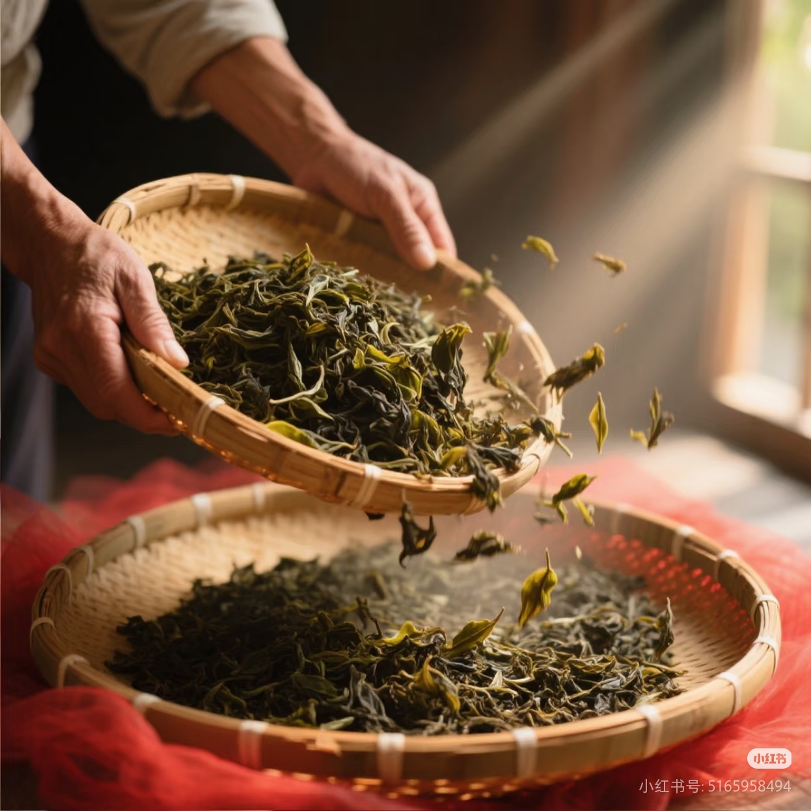
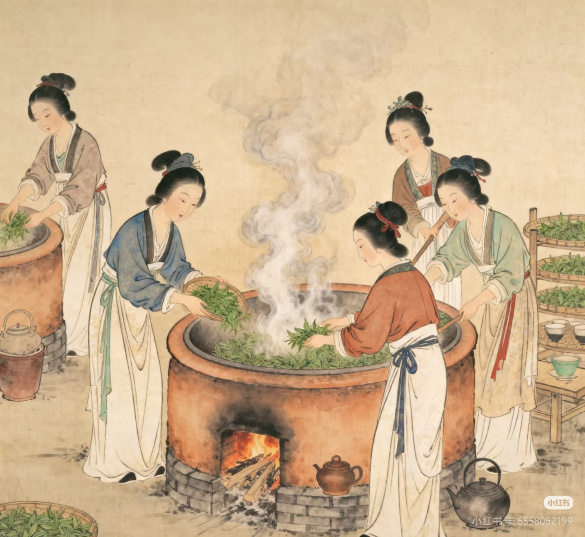
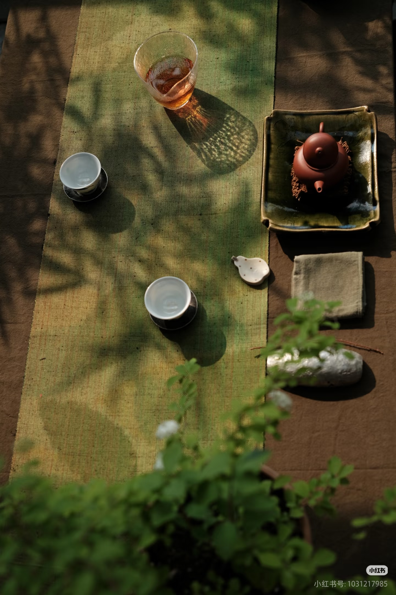
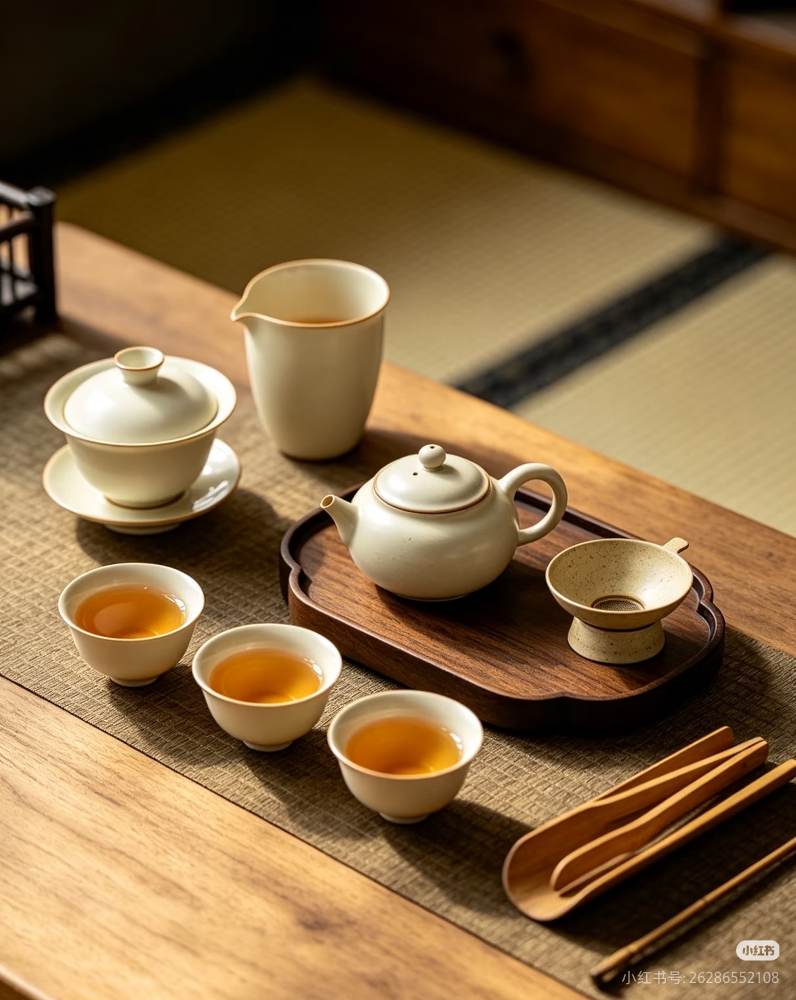
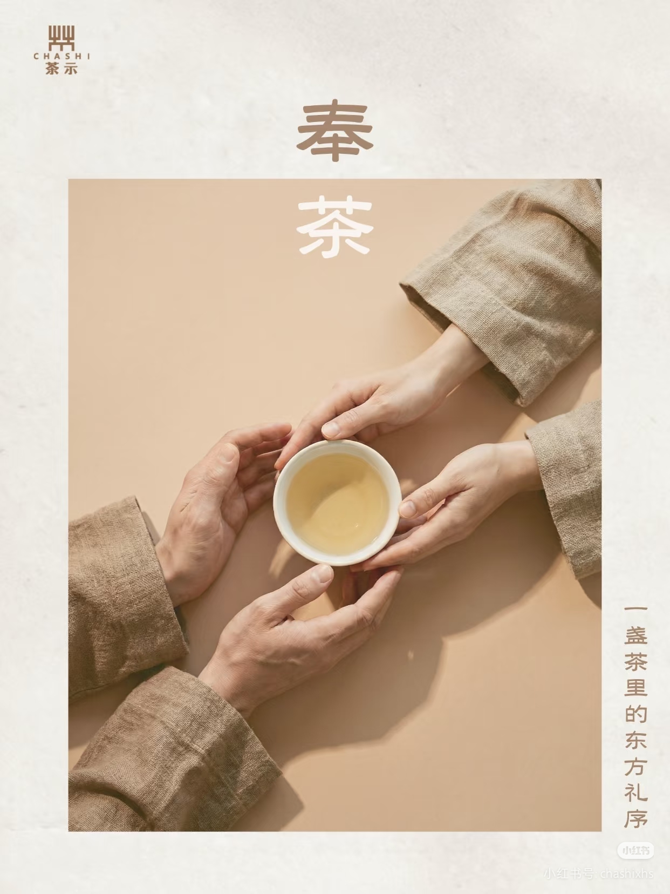

🌿 茶，不止是饮品
茶文化是中国传统文化的重要组成部分。本网站致力于用通俗易懂的方式， 向大众科普茶叶的种类、历史渊源、冲泡技巧以及茶道礼仪， 让更多人感受茶的魅力。

🍃 茶叶种类
六大茶类全面解析，还有来自家乡的特色茶——紫金蝉茶。

📜 茶的历史
从神农尝百草到现代茶饮，穿越千年，看茶如何影响世界。

💡 科普知识
喝茶有什么好处？隔夜茶能喝吗？你最关心的问题这里都有。

🏺 茶具图鉴
认识泡茶工具，从紫砂壶到品茗杯，让喝茶更有仪式感。

🙏 茶的礼仪
叩指礼、伸掌礼、斟茶七分满，感受中式待客之道。

🌟 家乡味道